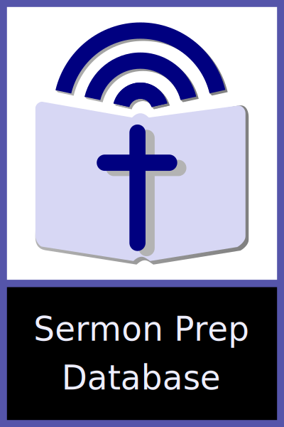
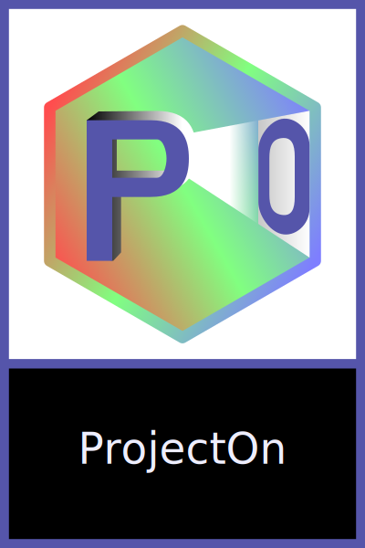
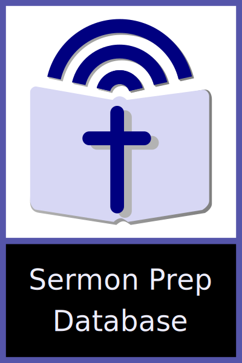
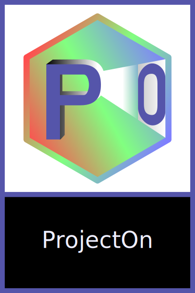

Weekly Giving is a little program to enter, store, print, retrieve, and graph weekly giving at your church.
Are you or your trustees counting the collection plate on a calculator or adding machine, filling out tally sheets by hand? Weekly Giving is a flexable program to simplify the process of counting the day's giving, printing an organized and detailed report to give to your treasurer.
Currently, Weekly Giving is available for the Microsoft Windows operating system only. Download the current Weekly Giving installer (v.1.4.2) and run it on your computer.
This information will get you started, but for more in-depth information on using Weekly Giving, please click “Help” and “Help Topics” in the menu.
When you first run Weekly Giving, you’ll be greeted with a screen consisting of five areas where you can record the day's giving:
In the Bills and Coins sections, you'll input the quantity of each denomination (i.e. if you have five ten-dollar bills, you would enter '5' and if you have eight quarters, you would enter '8'). In the Checks section, you can enter the value of each check. And in the Notes section, you can enter any notes pertaining to the giving. All of these, including the notes, will be on the printed report.
There are various changes that can be made to the Weekly Giving program. By choosing the "Settings" menu you will find that you can change such things as:
Changing the church name will change the name that appears at the upper-left of the screen as well as the name printed on the report.
Special Offering Designations are those offerings that have been designated by the giver to go to a particular ministry or fund. If you have special designations that are commonly given, you can change the default labels to reflect those designations.
Most commonly, special designations are included in the total deposit your treasurer records for the week. However, if your processes separate those special offerings out from the total deposit, you can choose to keep them out of the total printed on the report.
The default number of check boxes available on the program's main screen is 30. If you commonly have more or less checks than this, you can change the number of check boxes shown.
If you would like the database that stores all of your givings week-to-week to be stored in a different location, say, a network drive, you can change that as well.
 Printing made possible with the help of Artifex Software's
Ghostscript
.
Printing made possible with the help of Artifex Software's
Ghostscript
.
 ProjectOn is licensed under the GNU General Public License (GNU GPL)
published by the Free Software Foundation, either version 3 of the
License, or (at your option) any later version. See
http://www.gnu.org/licenses/
ProjectOn is licensed under the GNU General Public License (GNU GPL)
published by the Free Software Foundation, either version 3 of the
License, or (at your option) any later version. See
http://www.gnu.org/licenses/

 Weekly Giving’s main database is
Weekly Giving’s main database is